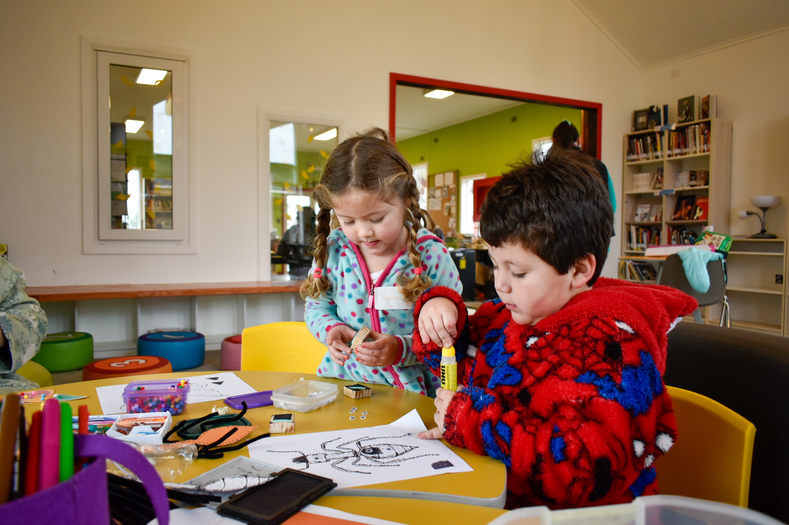
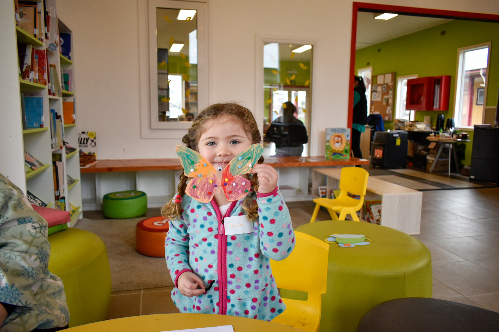
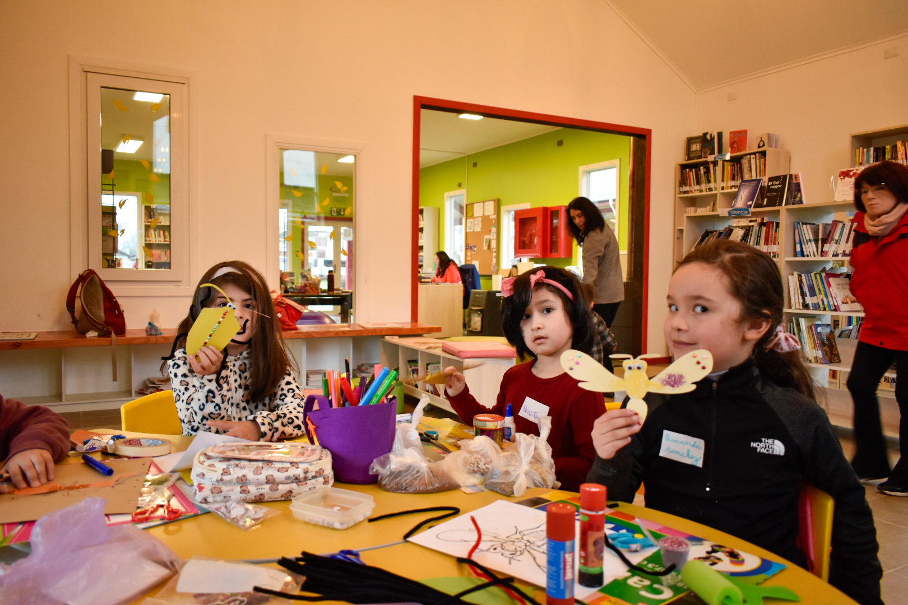
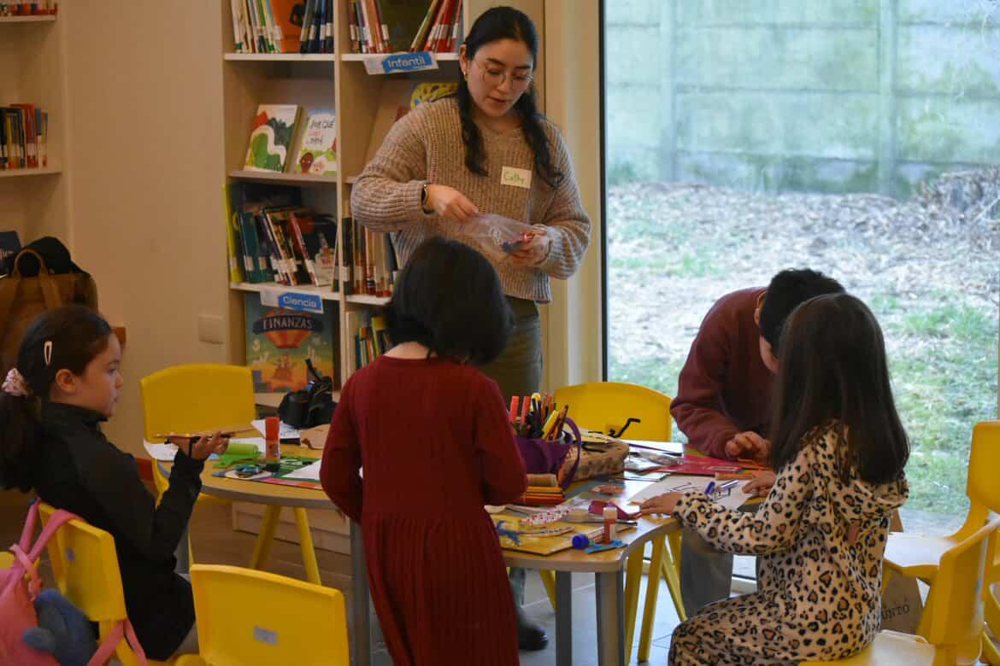
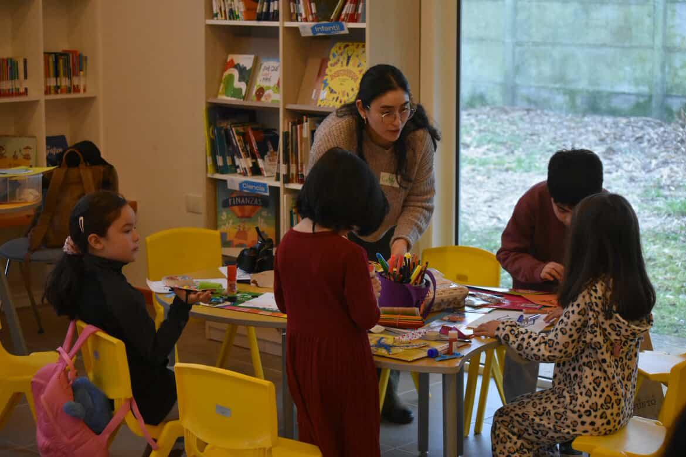

He desarrollado procesos formativos dirigidos a diversos públicos, adaptando las metodologías según las edades e intereses de cada grupo. Destaco especialmente los talleres de arte para infancias, donde además de entregar herramientas técnicas sobre materiales, busco fomentar la exploración, la experimentación y la creatividad. Estos espacios se transforman en instancias lúdicas de aprendizaje, que culminan en procesos creativos llenos de nuevas experiencias y risas.
Por otro lado, he impartido talleres de pintura al óleo para personas adultas en la comuna de Puyehue. En ellos se han abordado técnicas de dibujo utilizando materiales como el carboncillo y lápices técnicos, trabajando aspectos como la perspectiva, el encaje y la proporción. También se han explorado técnicas de color, comprendiendo su manejo, variaciones tonales y usos posibles dentro de la práctica pictórica.
Estos procesos formativos al desarrollarse con cierta continuidad en el tiempo, permiten generar vínculos dentro del grupo y un sentido de pertenencia. Quienes participan reconocen sus avances y progresos. Se sienten parte activa del proceso y valoran el espacio como un lugar de crecimiento personal y colectivo.
- 2025 | Taller de arte para infancias
- 2025 | Taller de pintura al óleo - Departamento de Cultural Puyehue
- 2022 | Taller extraprogramático de Artes Visuales - Colegio Creación Osorno
- 2021 | Taller de creación de portafolio de artista - Corporación Cultural Osorno




